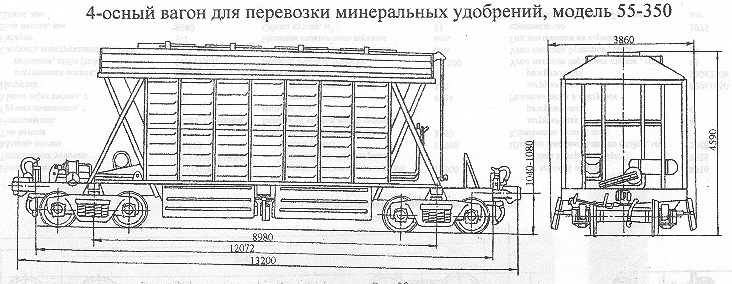

Назначение: для перевозки минеральных удобрений
Параметры
| Номер проекта | 350 |
| Технические условия | ТУ 3182-007-26038543-95 |
| Модель вагона | 55-350 |
| Тип вагона | |
| Изготовитель | Великолукский ЛРЗ |
| Грузоподъемность, т | 70 |
| Масса тары вагона, т | 23 |
| Нагрузка: статическая осевая, кН(тс) |
227,85(23,25) |
| погонная, кН/м(тс/м) | 69,04(7,045) |
| Скорость конструкционная, км/ч | 120 |
| Габарит | 1-Т |
| База вагона, мм | 8980 |
| Длина, мм: по осям сцепления автосцепок |
13200 |
| по концевым балкам рамы (длина рамы) | 12072 |
| Ширина максимальная, мм: | 3860 |
| Высота от уровня верха головок рельсов, мм максимальная |
4590 |
| до разгрузочных устройств | 300 |
| Количество осей, шт. | 4 |
| Модель 2-осной тележки | 18-100 |
| Наличие переходной площадки | есть |
| Наличие переходной площадки с ручным тормозом | нет |
| Наличие стояночного тормоза | есть |
| Объем кузова, м³ | 81 |
| Верхние размеры кузова вверху, мм: длина |
8610 |
| ширина | 3010 |
| Количество люков,шт.: загрузочных |
4 |
| разгрузочных | 4 |
| Размеры люка в свету, мм: загрузочных |
550х1530 |
| разгрузочных | 840х2382 |
| Угол наклона торцовых стенок, град | 65 |
| Угол наклона бункеров, град | 55 |
| Год постановки на серийное производство | 1997 |
| Возможность установки буферов | нет |